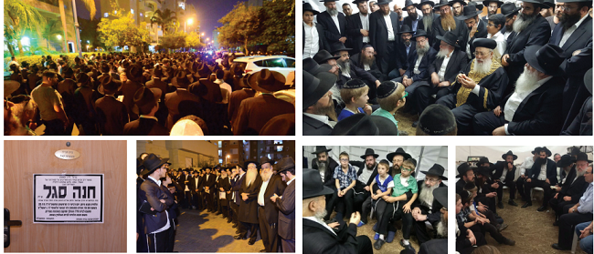

Lessons Learned from an Extraordinary Life
Brief notes on the person and character of the dear shlucha Chana Segal a”h, who passed from this world in the prime of life, in middle of her tremendous activities to hasten the Geula. We have gathered here a few luminous sparks about her conduct as a shlucha, wife and mother, which when joined together form the burning flame of a pure soul, who was a flaming torch in our midst. * Chani touched all our hearts. If we each learn some small lesson from her, it will be an elevation for her soul, and will hasten her imminent return as a soul in a body in the complete Redemption .
By Moran Kors

I went to offer consolation on Motzaei Shabbos and sat near her mother, Rebbetzin Chaya Rochel Hendel. One of the mind-blowing things that she said is that Chani never asked, “Why is this happening to me?” Ever!
The only thing she said was, “Apparently, I wasn’t thankful enough,” and she wanted to live longer in order to thank Hashem more for what He had given her. Now, of course Chani was thankful, but she felt it wasn’t enough. She never had complaints against Hashem for her illness.
Her mother added that Chani did not cry when under treatment, but was strong and full of bitachon that she would recover and return home healthy. She was so strong until someone would mention one of her children and then she could not withhold the tears.
Rebbetzin Hendel said that all of last Rosh Hashana, her youngest children, the one-and-a-half-year-old and the three year old, clung to her from both sides, making sure that she was with them. They seem to have felt what none of us imagined would happen.
One of the neighbors said that her children always heard the Segal children calling their mother “Mamme” [in Yiddish, as opposed to the Hebrew Ima], and they liked it and started calling her that too. “Now,” said the neighbor, “will we not hear the word ‘Mamme’ anymore?!”
Chani was an exceptional hostess. She always hosted with abundance, with patience for all and individual attention for every guest. She did not say no to hosting, even when she did not feel well, as Rebbetzin Hendel noted that even last Rosh Hashana, when she already knew her diagnosis, she hosted.
And she did everything for her parents. From Chani’s respect for her parents we can learn so much! Family was a top priority to her and she kept in close contact with all her siblings.
In her final days she made phone calls to get the phone numbers of the guidance counselors in her children’s schools, in order to tell them how to support each child when she will no longer be near.
FROM HER SISTER-IN-LAW: YIRAS SHAMAYIM
Dabrushy Hendel, her sister-in-law, noted Chani’s emuna and yiras Shamayim. She wasn’t an ordinary woman but a real tzadeikes!
There are details you hear but don’t quite believe that this was her everyday behavior. Her children say that whenever they traveled by car, she said T’hillim by heart and the child who sat next to her had to check that she wasn’t making a mistake, and she never did!
In other words, she knew all of T’hillim by heart and found the time to say it while providing an activity for the children.
Chani was very consistent. For example, when the children left the house, they received text messages with “Mincha reminder,” “T’fillas HaDerech reminder,” etc. The amazing thing is that they did not find this annoying. To them, this is how it should be done.
Chani was very talented and gifted. They offered her lucrative administrative jobs a number of times but she turned them down, because she did not want a job that would commit her to a packed day at the expense of her family. On shlichus, she did everything not for a salary but with submission to the meshaleiach.
Chani’s davening was an inner avodas ha’lev. She davened all the t’fillos and said Chitas before sunset, while the house continued to run like clockwork. The children say that every request they made was waiting for them in the morning, whether it was a certain item of clothing, a note, or a treat for a school trip. Chani studied with them for their tests. On Shabbos she played with each child separately to give them personal attention. In addition, at the Shabbos table, Chani gave each child his or her place, physically and spiritually, starting from the youngest who said the p’sukim, to the oldest who reviewed a maamer or sicha of the Rebbe.
If one of the children was late and embarrassed to go into class or any other place, she did not leave him to his own devices but went with them, if they asked her to.
Chani never asked “why” of Hashem, only of herself. Her yiras Shamayim is indescribable. She was particular about every detail of kashrus and taught her children that before eating, even by Lubavitchers, to speak up and ask about the hechsher and not only about the hechsher but also about the pots the food was cooked in.
Chani always wrote to the Rebbe, especially recently. Every day she wrote what the doctors said and how the situation was progressing. To the point that when they wanted to tell the seven-year old the sad news they said, “It is possible they will call to tell you news that isn’t good,” and he immediately said, “Then I want to write to the Rebbe.”
From a young age, her children davened three times a day. Chani always had a D’var Malchus with her. She enriched her knowledge by in-depth learning of the sichos and maamarim.
She respected and supported her husband in every which way and ran the house from A-Z. She was moser nefesh for her husband’s shlichus and followed him wherever he chose to go. She left her chinuch position in Tzfas which she could have developed into an administrative position, in order to go on shlichus to the center of the country. She did it all without talking; modestly and quietly.
Before she flew to Houston for treatment, she made lists for every child and didn’t forget to add a contact list. She was very organized and did not forget a single detail connected with her children or her family, even at the end.
FROM THE SHLUCHA MIRI SALAMA:TOTAL GIVING
Miri is a shlucha in Rishon L’Tziyon in the neighborhood next to that of the Segal family. This is how she describes them:
The Segal family are the Rebbe’s generals, not just shluchim! From Chani one can learn so much; her hospitality – the Shabbos table was always full of couples and families of mekuravim. They always welcomed people graciously. At every Shabbos meal, there were l’chaims and brachos. Chani always blessed every child and wished him success in everything he might need, down to the smallest detail.
To Chani, chinuch was first and foremost.
One of the days of the Shiva, the one-and-a-half-year-old baby was with me. I asked him to come to me so I can fix his yarmulke; from the youngest ages they absorbed her yiras Shamayim! He immediately came over to me and stood without moving or lowering his head until I had finished. That is not typical of this highly active age. Chani’s chinuch was really something rare! Until the age of three, they were home with her, and even after three, she did not have them stay out for the afternoon. They came back home earlier.
Chani worked hard on shlichus. She was full of Torah knowledge and knew the Rebbe’s horaos. She always offered guidance and support for anyone in need. All her activities and shiurim in family purity were undertaken with the utmost devotion and she continued giving them until the end.
Thanks to these shiurim, six ladies had babies!
Chani made sure there were camps in the summer, even when she did not have a building. She made a camp in her house and her daughters were the counselors. In this way, they were mekarev many children.
The number of Chani’s mekuravos grew. When she sent invitations to farbrengens on Shabbos, she noted that they should come on foot. Her mekuravos loved her and this is why they accepted and respected her request.
I moved a month and a half ago and Shabbos was coming … I felt that with all the boxes I could not have the Shabbos meals in my house, so I sent a text to Chani asking whether we could be her guests. Despite her condition, I did not know she was suffering because she didn’t say it was hard for her. She wrote back, “You are happily invited.”
When we arrived at her home, I immediately saw she was not herself. She was very pale and weak, but we thought it was just a matter of iron deficiency… Despite her condition, she did not say “no” to guests.
Until the final moment when she was in Eretz Yisroel, with all the pain, suffering and difficulty breathing, so that it was hard for her to go up to her bedroom, she hosted, and always in her unique fashion.
She did not ask for help from anyone. She always managed with what she had and was focused on giving. But when her condition deteriorated and people began to help, she didn’t stop thanking. Even when I helped with something really small, she thanked me endlessly.
The week before the fundraising campaign for her medical care that we organized, someone told me she wanted to donate money to the family. I asked Chani what her bank account number is, as someone wanted to make a donation. She said, “She should donate toward building the mikva. I don’t want a personal donation.” She was utterly devoted to shlichus even in the difficult times.
Chani’s yiras Shamayim was above and beyond. I remember clearly how when she would come to our shul (since that time they built a 770 replica in their neighborhood) she just said the word “Kesser” and all her children, even the youngest, would drop everything and stand next to her. They all knew that where there is “Kesser,” you don’t play outside. You drop everything, stand next to Ima, and say “K’dusha.” From babyhood, Chani instilled the importance of this in them, in a pleasant way.
On one of my visits to the hospital, I noticed that near her was a box of Neshek. In her condition, she still went around and gave out candles for Shabbos.
Despite everything, till the end, she davened three t’fillos a day, said Chitas, and was always particular about tznius.
During the Shiva, I took her four-year-old to preschool and she told me that her mother did not allow her to eat fleishig in school, just pareve. Her daughter said this with pride (after inquiring, I realized that it was meat from Eida HaChareidis but not Lubavitcher sh’chita).
If her baby ate fleishig, she gave him pareve afterward (not milchig). Six hours later she would give milchig. Although, according to halacha, a baby does not need to wait, Chani was particular and did not look for the easy way out. She also washed her hands and her baby’s hands even in middle of the night, before every feeding!
It made no difference what condition she was in, she had her principles and stuck to them. That is her greatness.
Chani enabled her husband to devote himself to shlichus. He went to many stores, put tefillin on with people and raised money to build their 770 replica. They got the land ten years ago, but the cornerstone laying was four years ago. Construction was delayed and very slow since it depended on donations. Her husband traveled as far as China to get the red bricks since they are cheaper there. Chani’s dream was to build the 770 replica in their neighborhood.
FROM HER MUSHPA CHAYA: A CHANNEL FOR GOOD, MATERIALLY AND SPIRITUALLY
Chaya, one of her mushpaos, who knew her from when she began receiving guidance from her back in Tzfas, tells how Chani directed her to take care of her health in her eating and sleeping. “Later on, I saw many examples of instances in which the Rebbe made the same points. She also guided me and encouraged me to finish my degree in education even though I was married with children, just so I would be involved in chinuch.”
Chaya says that as a young couple they lived in Kfar Chabad. “Once she came to Kfar Chabad to take care of her grandmother. She came with a baby and asked whether I could watch him in the garden, because she didn’t know me well enough to know how I am with children and about my kashrus. Apparently she asked for the garden rather than in the house because there she was sure all would be well with him and he wouldn’t eat something that was not on her level of kashrus observance. I remember how I was amazed by how particular she was about kashrus and how she had gone to help her grandmother in the middle of the day when she had so much to do and had little children to care for.
“One time, I consulted with her about going to the Rebbe and I said I did not want to fly due to budgetary concerns. She said, ‘When you don’t want to go to the Rebbe, that indicates that you should.’ We went for part of Tishrei because of her. She guided me a lot to consult with a rav and not make my own decisions. Even after writing to the Rebbe she asked me a number of times to ask a rav to explain the answer. I saw miracles in this regard.
“Chani treated every horaa of the Rebbe as though it was engraved in stone. Although I grew up as a Lubavitcher, I found it hard to wear a wig. She told me firmly: Rely on the Rebbe with closed eyes, for he cares about you in heavenly matters and in earthly matters, and whoever carries out the Rebbe’s wishes won’t see any harm resulting.
She always gave me the message to welcome my children home happily from school and be available to them.
Thanks to her, I started a shiur in family purity at the moshav where I am living now.
A job offer came up and we were unsure what to do. Although the rav approved of it, she asked: Did you go over all the details with him? When I said, not exactly, she said the line that really focused us: You don’t set aside your values for money.
Chani and I share the same birthday. One year it fell out on Shabbos, and my husband suggested to her husband that we celebrate it together out of town, but she refused to miss out on a planned farbrengen with her mekuravos on shlichus!
This year, my husband wanted to fly during Tishrei to the Rebbe. I immediately called Chani and told her that I had recently given birth and it did not seem possible to allow my husband to be away at this time. She suggested, “Perhaps make it possible for him to go for Simchas Torah and not Yom Kippur, so by that time you will have recovered more and will feel better by the time that he flies off.”
By amazing divine providence, my husband was offered a job as a cantor on Yom Kippur, and that is how he had the money to fly to the Rebbe.
I had a real challenge about signing up for WhatsApp, especially with my husband at the Rebbe, and it would make it much easier to stay in touch. Chani had a strong view about this as well, “As long as you don’t absolutely need it, it is better to do without, as after you get used to using it regularly it becomes very hard to stop, and a person has far greater peace of mind without it. As far as your husband, he should ask a mashpia, but you can’t force the decision on him.”
Additionally, I had a hard time with the kids on long Shabbasos, and she gave me a number of tips. One of them was that about 10-10:30, I should make Kiddush with the children and feed them a little challa with cheese and vegetables. In that way, they would be satisfied, their mother would be calmer, and could then give out some Shabbos treat.
Hosting guests was something that literally flowed in her veins. Once, right after I gave birth, someone called and invited himself. I consulted with her and told her that I have no energy. She immediately encouraged me and said, “It’s a test. Buy readymade salads if you have to, but don’t pass up the hosting of guests.”
It was very important to her in marital relationships that the husband be given a great deal of honor, while also giving the woman what she needs so that her desires are also fulfilled.
When I told Chani that it is very hard for me to be particular about Chitas, she told me that it is very important to be particular, and if it really was that hard for me, then to at least say one verse of the Chumash, one chapter of the T’hillim, and the like. The main thing being, not to give up on it entirely.
When it came to writing to the Rebbe by way of the Igros Kodesh, she went into the smallest details. She would always tell me, “Only if there is a clear blessing from the Rebbe do you move; if not, you do not move…”
This year, I really wanted to speak to her face to face, and she told me to come to the N’shei U’B’nos Chabad national convention in Yerushalayim. There were all sorts of obstacles and delays, and I ended up coming towards the end of the event. When I told her about the trip, she told me that next time I should make an effort to arrive earlier, since it had been difficult for her as well but there are things in life that it is very important to be particular about, and it is important to the Rebbe that women attend the national gathering.
The divine providence of my attending the event was that when I was leaving there was someone giving out “Shir LaMaalos” cards for new births, and she gave me two, one for me and one to give out. I gave one to a woman from a Litvishe background, and she was as excited as if she had received a treasure.
I put the second card in my purse, and when a few days later I gave birth suddenly, I felt that the “Shir LaMaalos” saved my life, since I gave birth a month before my due date. I saw clearly how when I listen to my mashpia, and especially a mashpia like Chani, material and spiritual blessings come down from heaven, and things work themselves out and are successful!
FROM REBBETZIN LEAH DUBROWSKI: SHE CONTINUES TO BE WITH US
Mrs. Leah Dubrowski is the wife of the rav of the Chabad community in Rishon L’Tziyon. In her words:
There are three main points that we can all learn from Chani.
1. Shlichus was her life’s work, the main focus of her life.
In the waiting room for her treatments, Chani spoke to women about lighting Shabbos candles, about Moshiach. As if she was not the main issue here, but rather she put herself aside. Despite the difficult test, she did what had to be done. When I came to visit her, I was concerned for her and felt unable to be involved with outreach in such a situation, but she was able to do so because she was never focused on herself.
Chani touched and influenced many women. At every opportunity and in every moment, she was centered on influencing others in her shlichus.
2. The Torah portion of Chayei Sarah speaks of the event that occurred after the passing of Sarah. Why then is the name of the parsha “Chayei Sarah,” meaning the “life” of Sarah? The reason is because the home continued to function according to the hopes and dreams of Sarah.
So too with Chani. Even in her last days, her children would not eat anything until they first “asked Mamme” what food was cooked in this pot before etc. Even when their mother is not around she is still present in their lives.
Being particular with halacha is very strong by them. Raizy Halperin, the assistant principal in the Beis Rivka in Kfar Chabad, told how in their high school there was a halacha contest, with the winner to receive a ticket to fly to the Rebbe. The two contestants that made it to the final round were Chani’s daughter and her cousin from Petach Tikva. They both were able to answer every question thrown at them. It was impossible to trip either one of them up on the final round, as halacha is something that runs in their blood. In the end, both of them got airline tickets to fly to the Rebbe!
3. On Erev Yom Kippur, before they left the house to fly to Houston, we brought the Kaparos to her home. We parted ways and she said calmly and with full faith, “I am confident that I will return home healthy to my children and shlichus.” She received the Rebbe’s blessings and went with the utmost faith and belief to see revealed miracles! Her attributes of faith and belief are a model and example for all of us.
With Hashem’s help, we should already merit that our righteous Moshiach be revealed speedily in our days, amen! And we should merit to see her with the resurrection of the dead, immediately now!
Beis Moshiach (staff). "Lessons Learned from an Extraordinary Life." Beis Moshiach, no. 1098 (December 20, 2017).